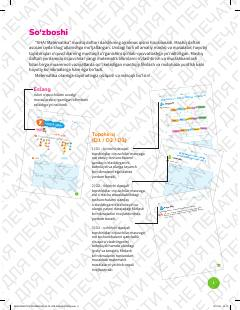

5M5-sinf o'quvchilari uchun matematika fanidan amaliy mashqlar daftari.
Ushbu mashq daftari o‘quvchilarning uyda mustaqil ravishda matematik bilimlarni o‘zlashtirishi va mustahkamlashi uchun mo‘ljallangan. Undagi turli darajadagi amaliy topshiriqlar va masalalar mantiqiy fikrlashni rivojlantirishga yordam beradi.